Version Beta
Le programme est composé de 2 parties :- évolution des paramètres cosmologiques des univers de Friedmann-Lemaître- trajectoires d'une particule libre en espace-temps de Schwarzschild.
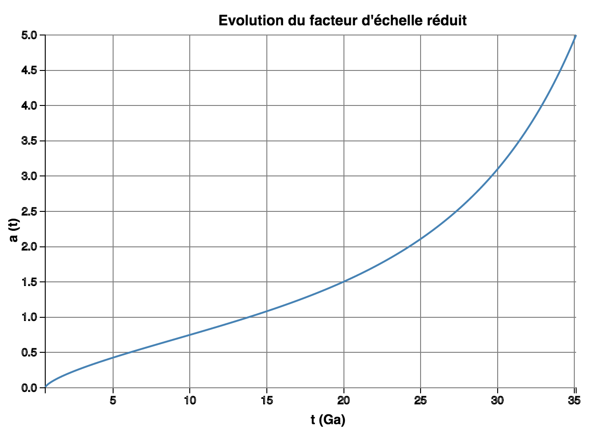 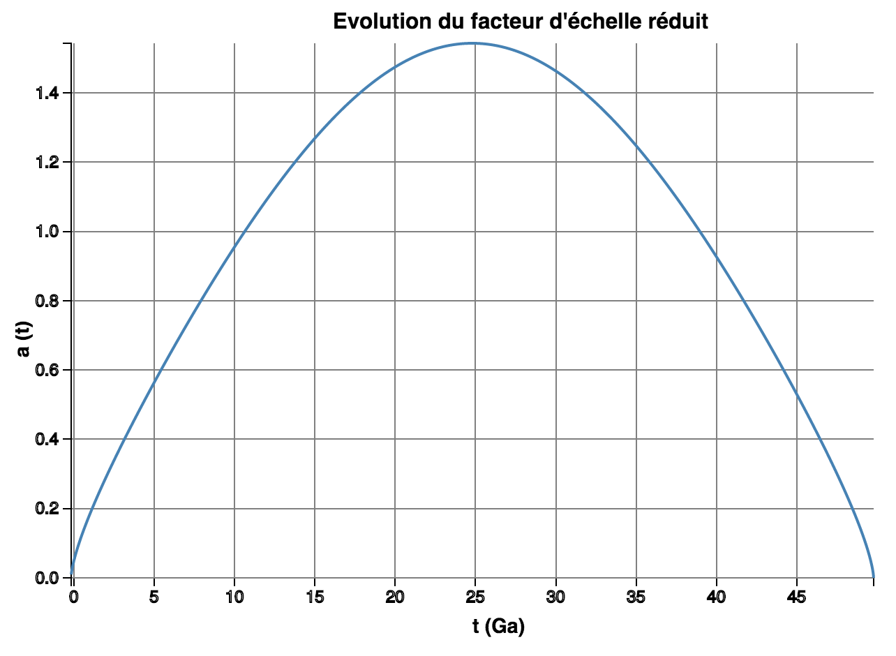 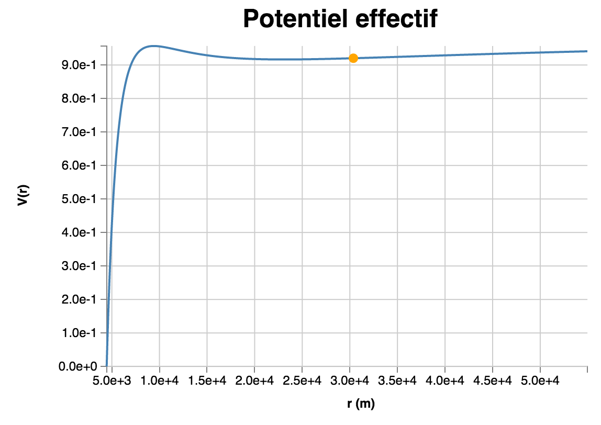
visites depuis le 18 Mai 2017.


 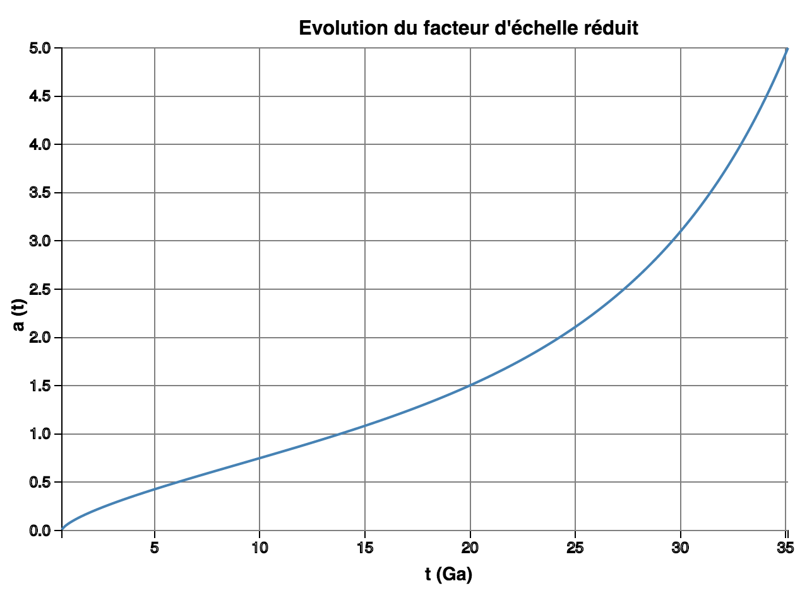
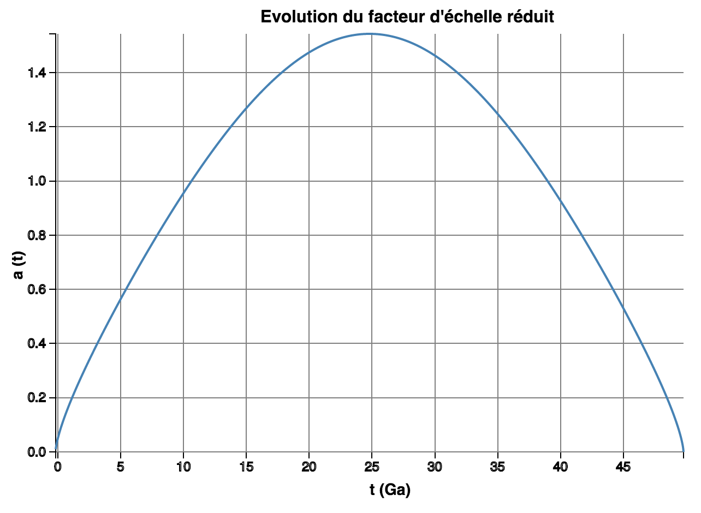
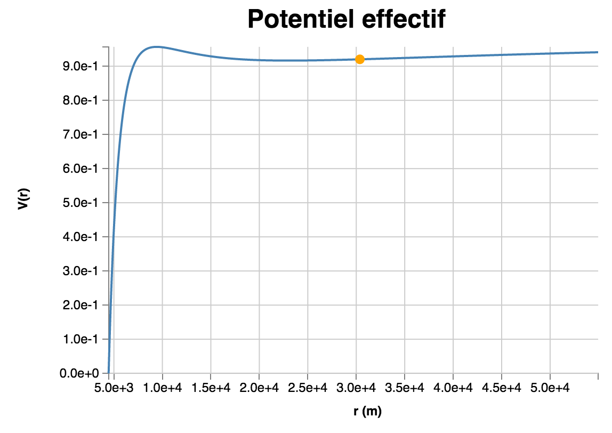
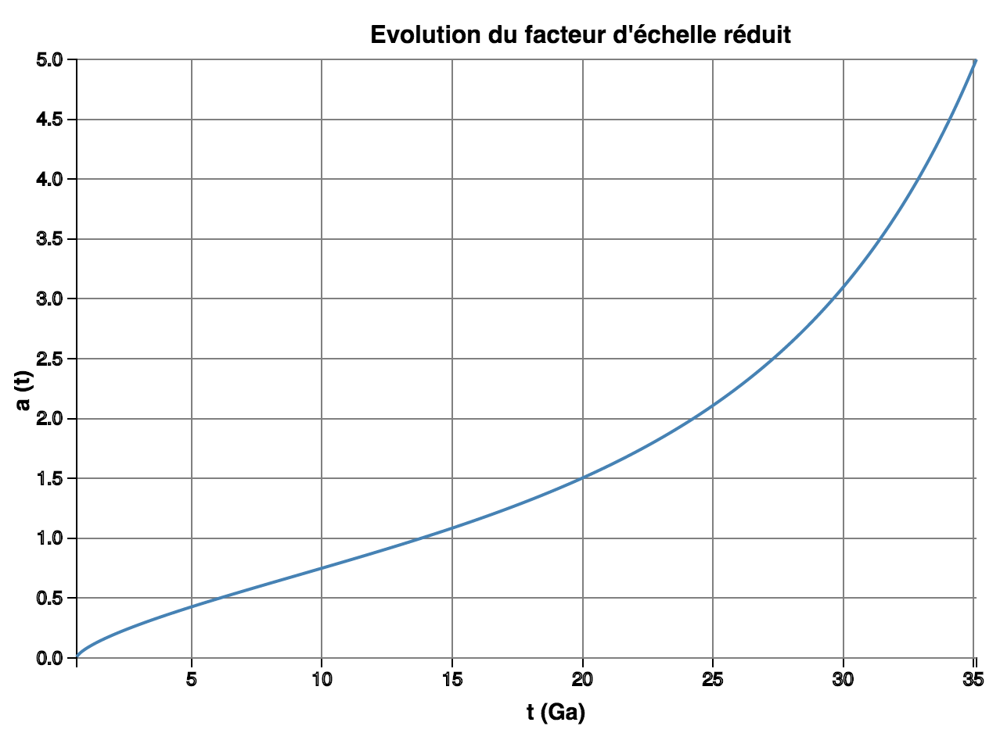
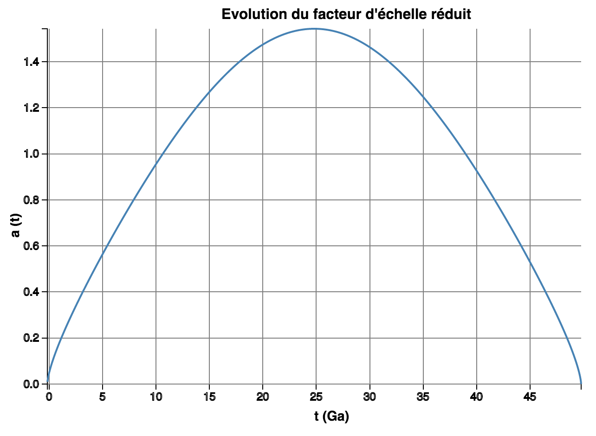
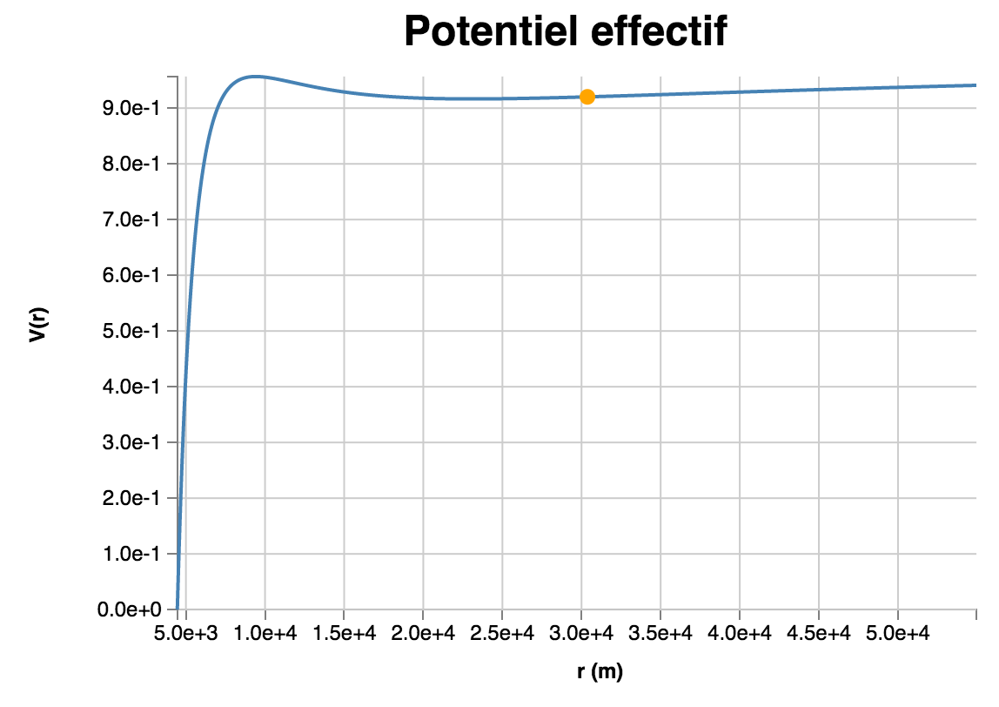
 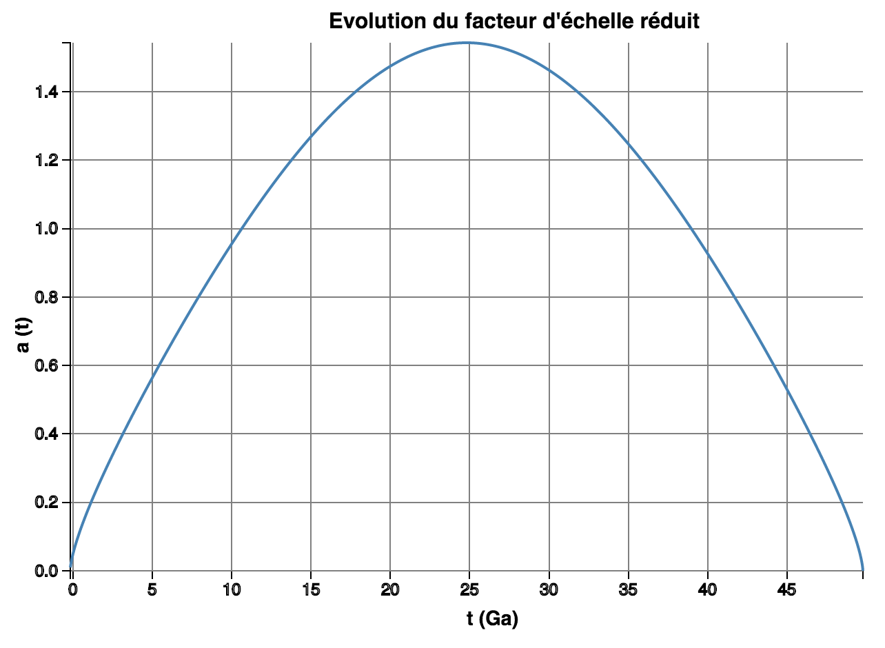
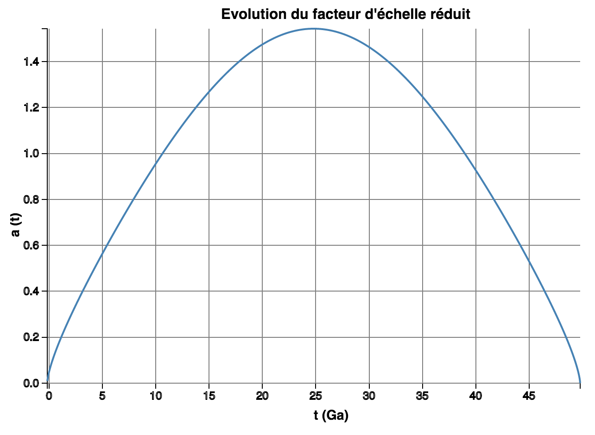
 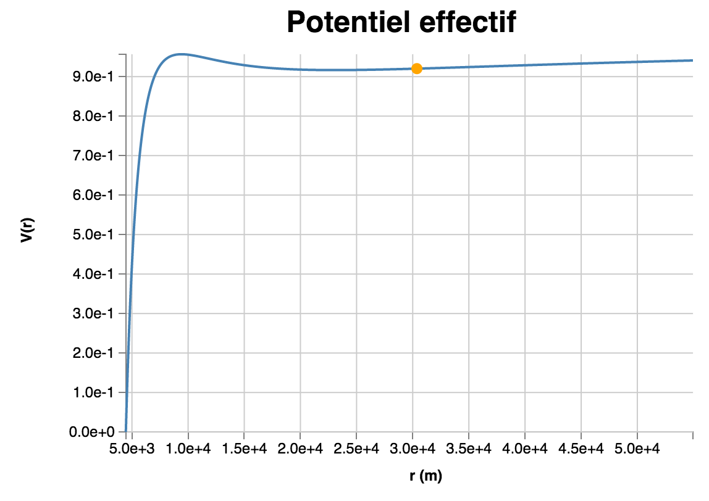
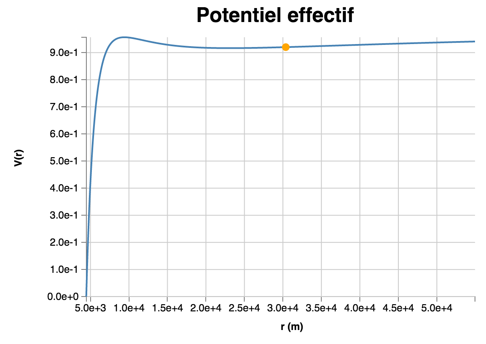